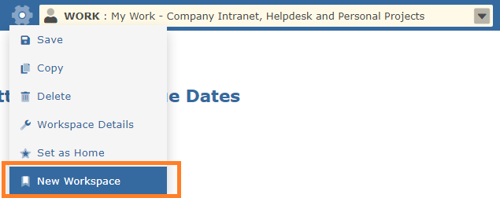
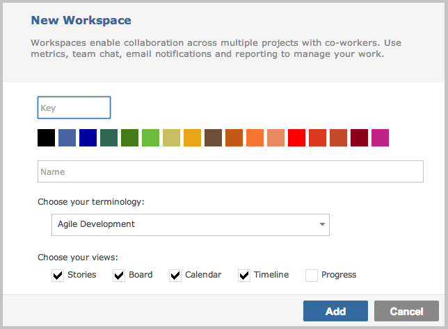

To add a new Workspace, click on the Workspace menu cog in the title bar and select New Workspace.
To make a Workspace the default, on the Workspace menu, select "Set as Home", which will move the set Workspace to the top of the list.

Every workspace can be assigned the taxonomy of a Project Template, such as Ticketing, Agile, or Issue Tracking.
For example, selecting Ticketing will mean that items are known as Tickets and work is packaged in Versions, Agile may mean that items become Tasks and work is packaged in Sprints etc.

You can select which views and what functionality is available within the workspace. Tick the views you require -- you can always change them.